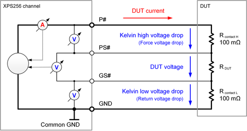

XPS256 voltage drop measurement
The XPS256 card supports voltage drop measurements that are also known as Kelvin measurements. Voltage drop measurement means that the voltage drop on the two force lines is measured to ensure that these connections to the DUT have a sufficiently low resistance. Voltage drop measurements are supported per channel for the force line (P#) and for the return line (common GND).
In this context, "Force lines" means both the high force line (P#) and the common return line (GND). The high force line is also referenced as "Force line".
The voltage drop is measured differentially between internal reference points and the force to sense connection at the DUT using the PS# and GS# sense lines. Measuring the voltage drop ensures that the force connections to the DUT have a sufficiently low resistance and also ensures that there is enough voltage headroom left for proper work of the power stage.
The ADC values for the voltage drop measurements are continuously provided by the digital closed loop control at a sample frequency of 200 kHz1) even if no associated measurement is executed.
The delivered values can be used for individual measurements and can also be used to trigger the disconnection of a channel if the user-defined limit is exceeded. Tracking of the maximum voltage drop is also supported.
The following drawing shows the operating principle of the unit:

Application note
- Handling of disconnected channels
-
Channels that exceed a user-defined limit of the voltage drop limit are automatically disconnected if this functionality has been enabled by the associated instrument properties.
In this context "disconnected" means that output relays are opened by the channel controller immediately and independently of the SmarTest software.
To continue normal operation, the related pin must additionally be disconnected and reconnected by SmarTest.
For more information, refer to Handling of disconnected channels in topic XPS256 specific setup tasks.
Functional changes
- Introduced in SmarTest 7.10.1